| fichier | SHA-256 | codec | format | tags couleur (espace/primaires/transfert, plage) | durée |
|---|---|---|---|---|---|
| IMG_7068.MOV | 82131dc0e3e593fec5dec6c12dd9e3bbaf8dd4d053576682f29cd5dbbf3e897d | prores HQ | 2816x1584 yuv422p10le 30.0 fps | bt2020nc/bt2020/unknown, None | 9.4s |
| IMG_7073.MOV | 9ddac27c73c6617cd6c1a3c888bdaf75887bbb86d7f85630f84253f1483a737e | prores HQ | 3840x2160 yuv422p10le 30.0 fps | bt2020nc/bt2020/unknown, None | 10.8s |
IMG_7068.MOV : compatible Apple Log (indices convergents ; aucun tag explicite 'Apple Log' lisible)
Plage du signal : tv — déduite des données : plancher 206 / min 185 ≈ noir Apple Log en plage vidéo (195.8)
| indice | résultat | valeur |
|---|---|---|
| codec ProRes | OK | prores HQ |
| fabricant Apple / iPhone | OK | Apple iPhone 15 Pro Max iOS 27.0 |
| primaires BT.2020 (Apple Log) | OK | bt2020 |
| transfert non SDR/HLG/PQ (Apple Log n'a pas de code standard) | OK | unknown |
| niveau de noir = noir Apple Log | OK | Y10 min 185, plancher p0.01 206 (noir Apple Log : vidéo 195.8 / complète 153.9) |
IMG_7073.MOV : compatible Apple Log (indices convergents ; aucun tag explicite 'Apple Log' lisible)
Plage du signal : tv — HYPOTHESE : plage non declaree et non deductible de ce plan (pas de noir profond). Meme appareil, meme iOS 27.0, meme codec ProRes 422 HQ que IMG_7068, dont la plage video est verifiee par les donnees.
| indice | résultat | valeur |
|---|---|---|
| codec ProRes | OK | prores HQ |
| fabricant Apple / iPhone | OK | Apple iPhone 15 Pro Max iOS 27.0 |
| primaires BT.2020 (Apple Log) | OK | bt2020 |
| transfert non SDR/HLG/PQ (Apple Log n'a pas de code standard) | OK | unknown |
| niveau de noir = noir Apple Log | non concluant | Y10 min 210, plancher p0.01 234 (noir Apple Log : vidéo 195.8 / complète 153.9) - pas de noir profond dans l'image, non concluant |
Frames décodées en 16 bits avec la matrice et la plage déclarées par le fichier, réduites à 1920 px de large pour l'analyse. Sélection automatique (ciel, végétation, architecture, blancs, peau, sombres, représentatives) : voir manifest.json.
Diagnostic rédigé sur v1.0 ; vérifié en v1.1 : mesures identiques à 0,001 près (la correction moteur v1.1 ne touche que les couleurs extrêmes, absentes de ces plans). Identification : les deux rushes sont compatibles Apple Log (ProRes 422 HQ, iPhone 15 Pro Max, BT.2020, transfert non standard). Plage vidéo déduite des données pour IMG_7068 (noir mesuré ≈ noir Apple Log) ; supposée pour IMG_7073 (pas de noir dans l'image, même appareil et réglages). Base technique : ACES 2.0 SDR Rec.709 (NON-APPLE) — la LUT officielle Apple n'est pas fournie. Les looks ont été conçus pour se placer après la LUT Apple : ce diagnostic est à confirmer avec elle. Rushes : Paris, 26/09/2026, iPhone 15 Pro Max, ProRes 422 HQ Apple Log, plans verticaux. IMG_7068 (15h23) : ciel couvert, Seine, pont, bateau-mouche à coque blanche. IMG_7073 (16h22) : soleil voilé et nuages, façade de l'Île Saint-Louis, arbres, quai en pierre claire. Non couverts par ces rushes : tons chair exploitables (passagers trop petits, ~0,1 % des pixels), nuit, golden hour, blancs proches de 1.0 (la coque blanche plafonne vers 0,8 après ACES 2.0). Les notes valent pour ces deux rushes de jour, pas pour tous les usages.
MAXS_Natural est le plus polyvalent : sur les deux rushes il reste fidèle à la base (chroma du ciel ×1,01, végétation ×0,97, aucun décalage de teinte mesurable, aucun écrêtage, noirs intacts) tout en ajoutant un léger contraste (+4 %). MAXS_Paris est le plus proche de l'intention esthétique de ces plans (architecture, Seine, pierre), mais il vide le ciel bleu (-35 à -47 % de chroma) et renforce le bruit chroma dans les ombres ensoleillées (+28 à +38 %) : à corriger avant d'en faire un look par défaut.
Écarts calculés par rapport à la référence technique B_ACES2_Rec709_NON-APPLE. L, C = OkLab. Ratio de bruit = écart-type haute fréquence dans les zones sombres / référence.
| rendu | L_median | contraste_L_p95_p5 | chroma_moyen | noir_p1_L | clip_hautes_pct | noirs_ecrases_pct | bruit_ombres_L_ratio | bruit_ombres_chroma_ratio | peau_chroma_ratio | peau_teinte_decalage_moyen | ciel_chroma_ratio | vegetation_chroma_ratio | blancs_chroma_moyen |
|---|---|---|---|---|---|---|---|---|---|---|---|---|---|
| B_ACES2 | 0.407 | 0.487 | 0.015 | 0.110 | 0.000 | 0.000 | 1.000 | 1.000 | – | – | 1.000 | 1.000 | – |
| MAXS_Natural | 0.396 | 0.508 | 0.015 | 0.098 | 0.000 | 0.000 | 1.004 | 0.987 | – | – | 1.015 | 0.966 | – |
| MAXS_Paris | 0.391 | 0.514 | 0.013 | 0.099 | 0.000 | 0.000 | 0.984 | 1.109 | – | – | 0.595 | 0.806 | – |
| MAXS_Film | 0.390 | 0.502 | 0.015 | 0.125 | 0.000 | 0.000 | 0.893 | 0.833 | – | – | 0.893 | 0.822 | – |
| MAXS_Golden | 0.397 | 0.505 | 0.012 | 0.101 | 0.000 | 0.000 | 0.995 | 1.046 | – | – | 0.559 | 1.051 | – |
| MAXS_Night | 0.402 | 0.493 | 0.016 | 0.114 | 0.000 | 0.000 | 0.965 | 1.018 | – | – | 0.889 | 0.779 | – |
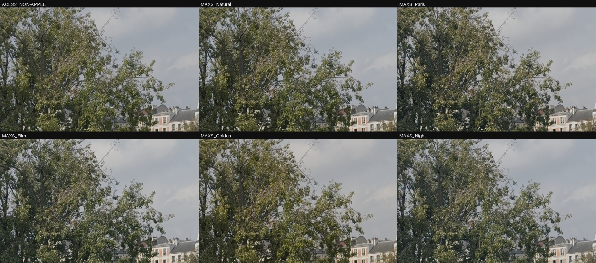
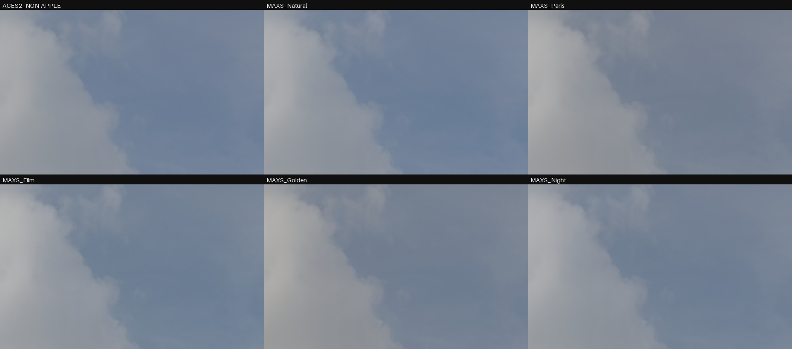
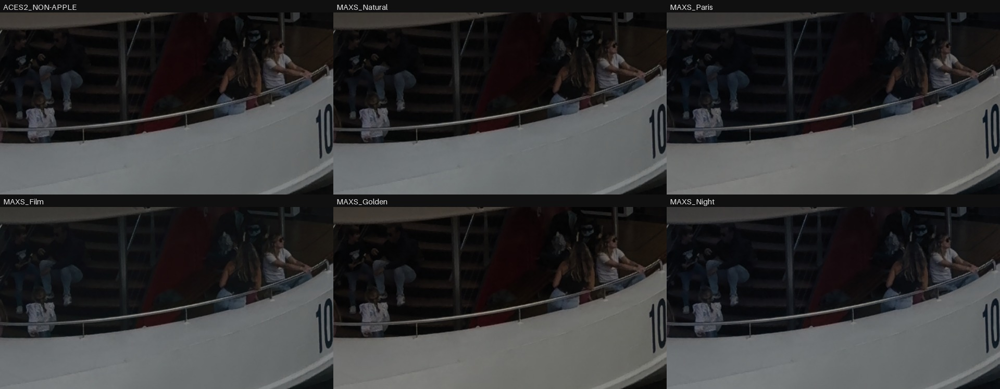
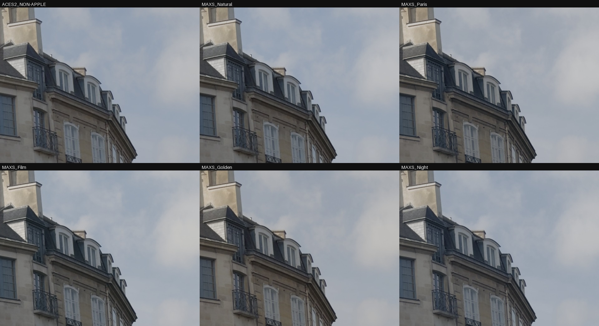
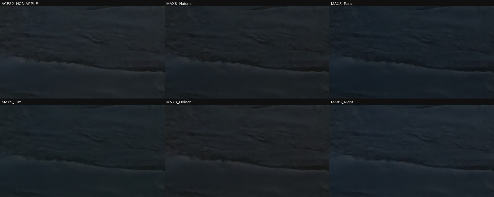
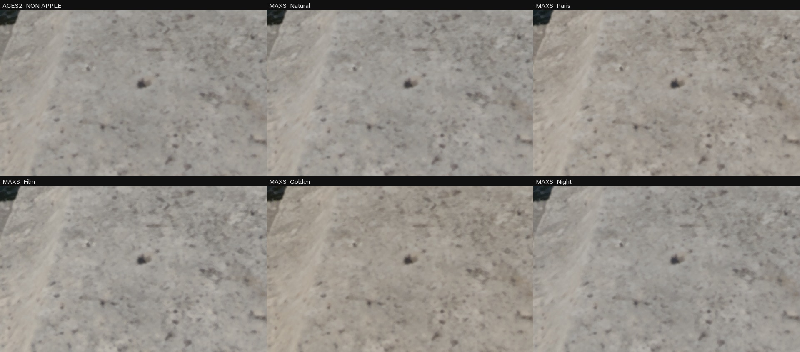
Couverture détectée (%) : {"ciel": 24.1, "vegetation": 0.0, "blancs": 0.0, "peau": 0.1, "sombres": 33.3, "architecture": 28.4}
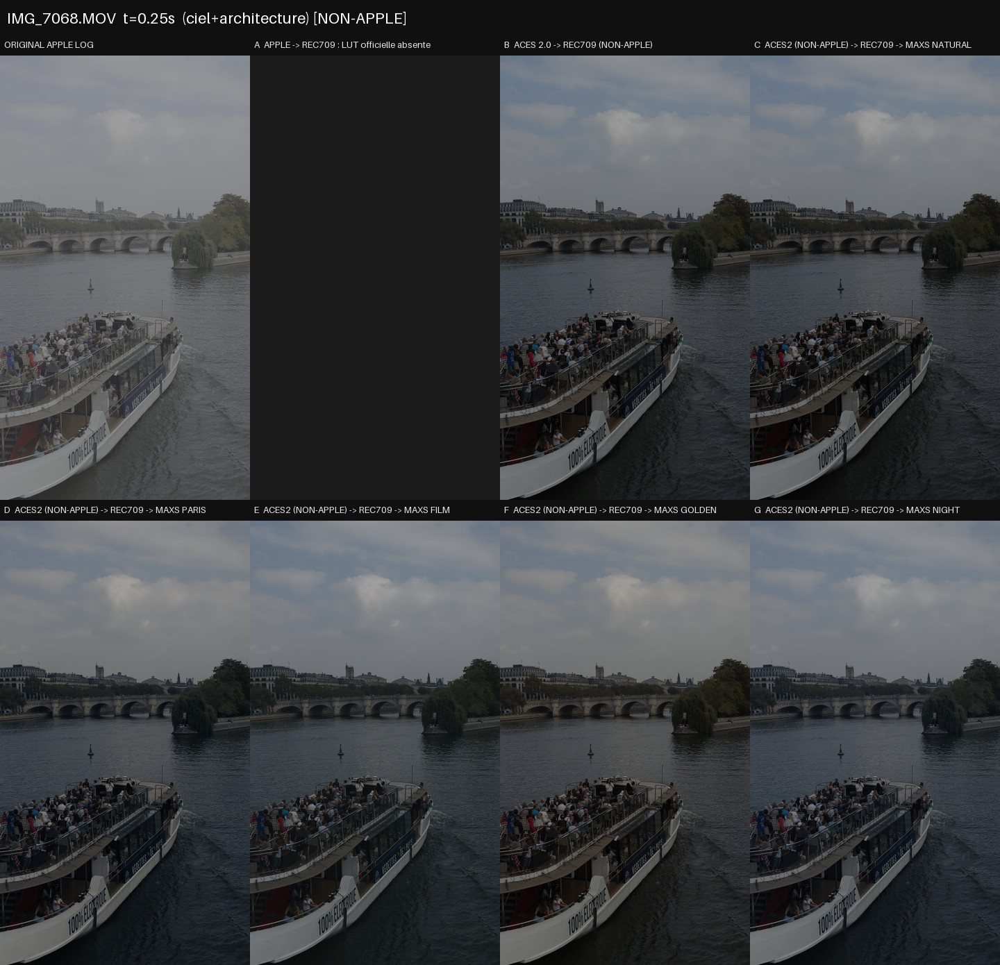
| rendu | L_median | contraste_L_p95_p5 | chroma_moyen | noir_p1_L | clip_hautes_pct | noirs_ecrases_pct | bruit_ombres_L_ratio | bruit_ombres_chroma_ratio | peau_chroma_ratio | peau_teinte_decalage_moyen | ciel_chroma_ratio | vegetation_chroma_ratio | blancs_chroma_moyen |
|---|---|---|---|---|---|---|---|---|---|---|---|---|---|
| B_ACES2 | 0.356 | 0.490 | 0.011 | 0.059 | 0.000 | 0.001 | 1.000 | 1.000 | – | – | 1.000 | – | – |
| MAXS_Natural | 0.341 | 0.503 | 0.010 | 0.052 | 0.000 | 0.001 | 0.991 | 0.924 | – | – | 1.018 | – | – |
| MAXS_Paris | 0.334 | 0.503 | 0.010 | 0.057 | 0.000 | 0.000 | 0.961 | 1.005 | – | – | 0.528 | – | – |
| MAXS_Film | 0.332 | 0.480 | 0.011 | 0.092 | 0.000 | 0.000 | 0.856 | 0.814 | – | – | 0.936 | – | – |
| MAXS_Golden | 0.342 | 0.500 | 0.007 | 0.056 | 0.000 | 0.000 | 0.981 | 0.923 | – | – | 0.469 | – | – |
| MAXS_Night | 0.348 | 0.487 | 0.013 | 0.070 | 0.000 | 0.000 | 0.953 | 0.946 | – | – | 0.919 | – | – |
Couverture détectée (%) : {"ciel": 24.0, "vegetation": 0.0, "blancs": 0.0, "peau": 0.1, "sombres": 35.1, "architecture": 26.6}
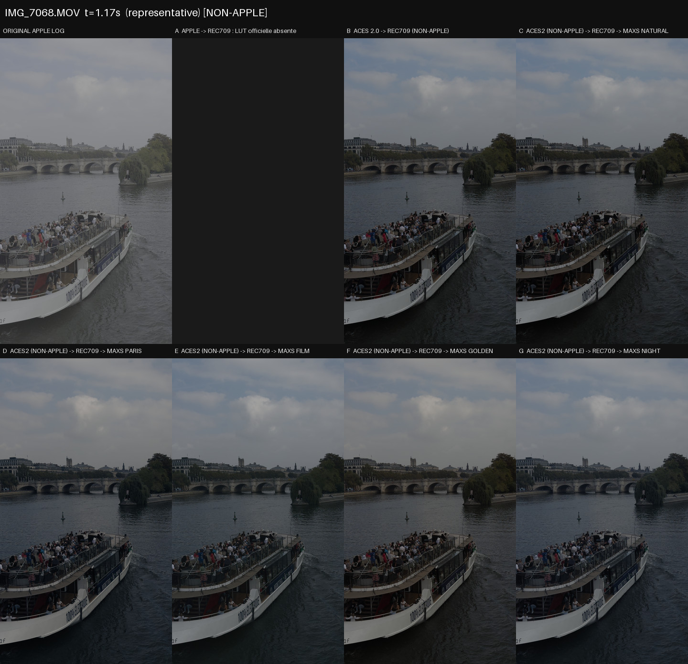
| rendu | L_median | contraste_L_p95_p5 | chroma_moyen | noir_p1_L | clip_hautes_pct | noirs_ecrases_pct | bruit_ombres_L_ratio | bruit_ombres_chroma_ratio | peau_chroma_ratio | peau_teinte_decalage_moyen | ciel_chroma_ratio | vegetation_chroma_ratio | blancs_chroma_moyen |
|---|---|---|---|---|---|---|---|---|---|---|---|---|---|
| B_ACES2 | 0.351 | 0.500 | 0.010 | 0.052 | 0.000 | 0.001 | 1.000 | 1.000 | – | – | 1.000 | – | – |
| MAXS_Natural | 0.336 | 0.513 | 0.010 | 0.045 | 0.000 | 0.001 | 0.991 | 0.923 | – | – | 1.018 | – | – |
| MAXS_Paris | 0.329 | 0.512 | 0.010 | 0.051 | 0.000 | 0.000 | 0.961 | 1.010 | – | – | 0.528 | – | – |
| MAXS_Film | 0.327 | 0.486 | 0.011 | 0.087 | 0.000 | 0.000 | 0.857 | 0.821 | – | – | 0.936 | – | – |
| MAXS_Golden | 0.337 | 0.509 | 0.007 | 0.049 | 0.000 | 0.000 | 0.981 | 0.925 | – | – | 0.470 | – | – |
| MAXS_Night | 0.343 | 0.496 | 0.013 | 0.063 | 0.000 | 0.000 | 0.953 | 0.952 | – | – | 0.919 | – | – |
Couverture détectée (%) : {"ciel": 24.0, "vegetation": 0.0, "blancs": 0.0, "peau": 0.0, "sombres": 36.5, "architecture": 25.1}
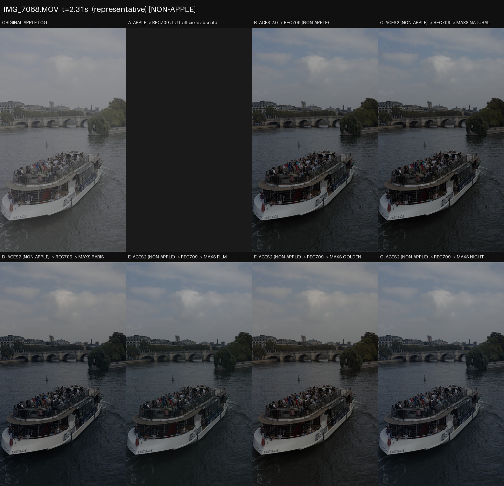
| rendu | L_median | contraste_L_p95_p5 | chroma_moyen | noir_p1_L | clip_hautes_pct | noirs_ecrases_pct | bruit_ombres_L_ratio | bruit_ombres_chroma_ratio | peau_chroma_ratio | peau_teinte_decalage_moyen | ciel_chroma_ratio | vegetation_chroma_ratio | blancs_chroma_moyen |
|---|---|---|---|---|---|---|---|---|---|---|---|---|---|
| B_ACES2 | 0.344 | 0.492 | 0.010 | 0.056 | 0.000 | 0.001 | 1.000 | 1.000 | – | – | 1.000 | – | – |
| MAXS_Natural | 0.328 | 0.505 | 0.010 | 0.048 | 0.000 | 0.001 | 0.991 | 0.923 | – | – | 1.018 | – | – |
| MAXS_Paris | 0.321 | 0.505 | 0.010 | 0.054 | 0.000 | 0.000 | 0.962 | 0.989 | – | – | 0.528 | – | – |
| MAXS_Film | 0.319 | 0.481 | 0.011 | 0.089 | 0.000 | 0.000 | 0.857 | 0.807 | – | – | 0.936 | – | – |
| MAXS_Golden | 0.329 | 0.502 | 0.007 | 0.052 | 0.000 | 0.000 | 0.981 | 0.928 | – | – | 0.469 | – | – |
| MAXS_Night | 0.336 | 0.488 | 0.013 | 0.067 | 0.000 | 0.000 | 0.953 | 0.928 | – | – | 0.919 | – | – |
Couverture détectée (%) : {"ciel": 23.9, "vegetation": 0.0, "blancs": 0.0, "peau": 0.0, "sombres": 38.1, "architecture": 23.4}
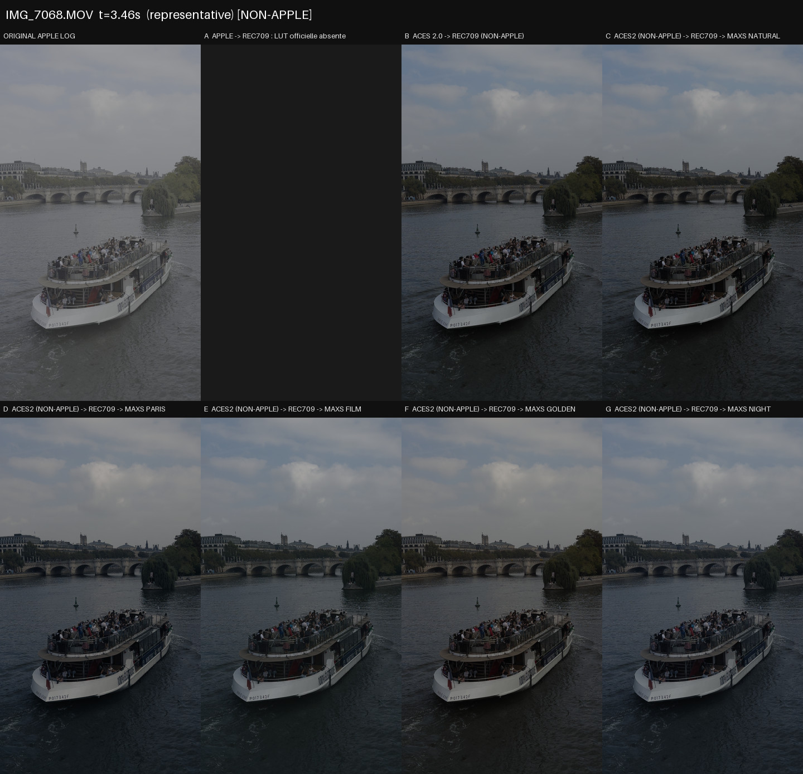
| rendu | L_median | contraste_L_p95_p5 | chroma_moyen | noir_p1_L | clip_hautes_pct | noirs_ecrases_pct | bruit_ombres_L_ratio | bruit_ombres_chroma_ratio | peau_chroma_ratio | peau_teinte_decalage_moyen | ciel_chroma_ratio | vegetation_chroma_ratio | blancs_chroma_moyen |
|---|---|---|---|---|---|---|---|---|---|---|---|---|---|
| B_ACES2 | 0.331 | 0.476 | 0.010 | 0.061 | 0.000 | 0.000 | 1.000 | 1.000 | – | – | 1.000 | – | – |
| MAXS_Natural | 0.315 | 0.491 | 0.010 | 0.053 | 0.000 | 0.000 | 0.990 | 0.922 | – | – | 1.018 | – | – |
| MAXS_Paris | 0.307 | 0.492 | 0.011 | 0.058 | 0.000 | 0.000 | 0.960 | 0.969 | – | – | 0.527 | – | – |
| MAXS_Film | 0.306 | 0.471 | 0.011 | 0.092 | 0.000 | 0.000 | 0.854 | 0.793 | – | – | 0.936 | – | – |
| MAXS_Golden | 0.316 | 0.488 | 0.007 | 0.057 | 0.000 | 0.000 | 0.981 | 0.939 | – | – | 0.469 | – | – |
| MAXS_Night | 0.323 | 0.475 | 0.013 | 0.071 | 0.000 | 0.000 | 0.952 | 0.914 | – | – | 0.919 | – | – |
Couverture détectée (%) : {"ciel": 23.7, "vegetation": 0.0, "blancs": 0.0, "peau": 0.0, "sombres": 39.4, "architecture": 22.1}
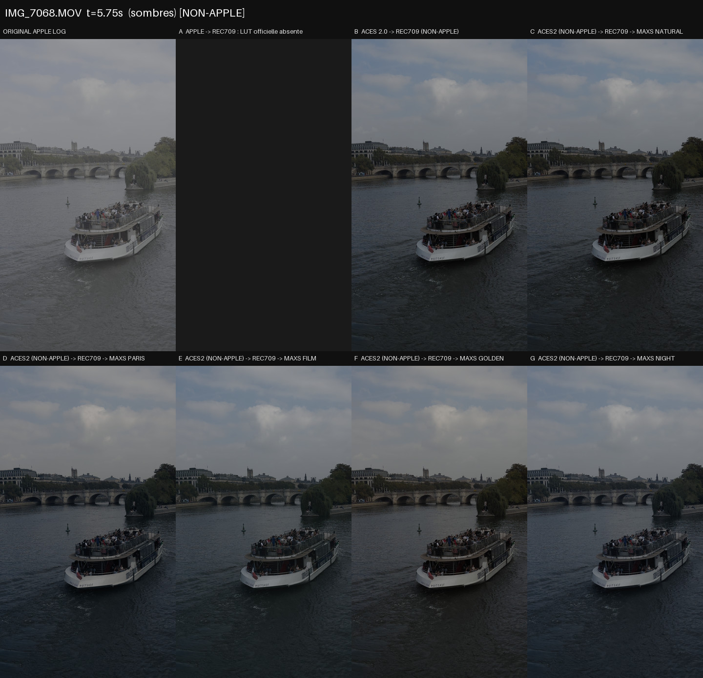
| rendu | L_median | contraste_L_p95_p5 | chroma_moyen | noir_p1_L | clip_hautes_pct | noirs_ecrases_pct | bruit_ombres_L_ratio | bruit_ombres_chroma_ratio | peau_chroma_ratio | peau_teinte_decalage_moyen | ciel_chroma_ratio | vegetation_chroma_ratio | blancs_chroma_moyen |
|---|---|---|---|---|---|---|---|---|---|---|---|---|---|
| B_ACES2 | 0.319 | 0.452 | 0.011 | 0.071 | 0.000 | 0.000 | 1.000 | 1.000 | – | – | 1.000 | – | – |
| MAXS_Natural | 0.302 | 0.469 | 0.010 | 0.062 | 0.000 | 0.001 | 0.988 | 0.921 | – | – | 1.018 | – | – |
| MAXS_Paris | 0.295 | 0.472 | 0.011 | 0.066 | 0.000 | 0.000 | 0.957 | 0.930 | – | – | 0.527 | – | – |
| MAXS_Film | 0.294 | 0.455 | 0.012 | 0.098 | 0.000 | 0.000 | 0.847 | 0.781 | – | – | 0.936 | – | – |
| MAXS_Golden | 0.303 | 0.466 | 0.006 | 0.066 | 0.000 | 0.000 | 0.979 | 0.947 | – | – | 0.468 | – | – |
| MAXS_Night | 0.311 | 0.453 | 0.014 | 0.079 | 0.000 | 0.000 | 0.950 | 0.891 | – | – | 0.919 | – | – |
Couverture détectée (%) : {"ciel": 40.4, "vegetation": 5.9, "blancs": 0.0, "peau": 0.1, "sombres": 5.8, "architecture": 46.2}
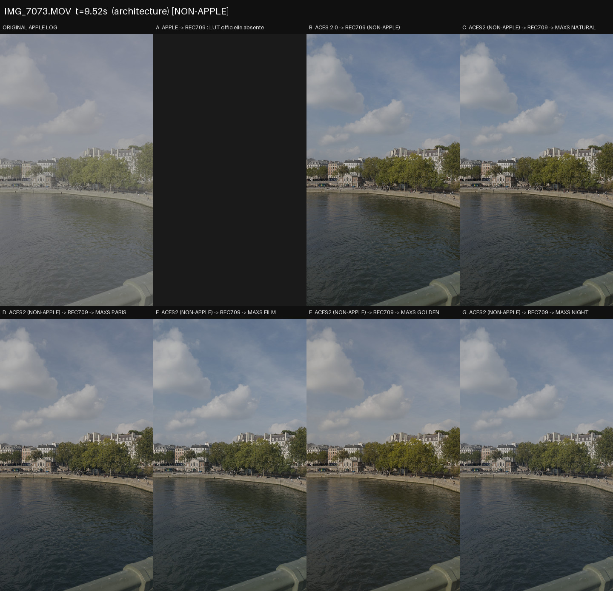
| rendu | L_median | contraste_L_p95_p5 | chroma_moyen | noir_p1_L | clip_hautes_pct | noirs_ecrases_pct | bruit_ombres_L_ratio | bruit_ombres_chroma_ratio | peau_chroma_ratio | peau_teinte_decalage_moyen | ciel_chroma_ratio | vegetation_chroma_ratio | blancs_chroma_moyen |
|---|---|---|---|---|---|---|---|---|---|---|---|---|---|
| B_ACES2 | 0.481 | 0.427 | 0.023 | 0.215 | 0.000 | 0.000 | 1.000 | 1.000 | – | – | 1.000 | 1.000 | – |
| MAXS_Natural | 0.476 | 0.454 | 0.023 | 0.196 | 0.000 | 0.000 | 1.026 | 1.097 | – | – | 1.015 | 0.964 | – |
| MAXS_Paris | 0.473 | 0.467 | 0.018 | 0.190 | 0.000 | 0.000 | 1.022 | 1.382 | – | – | 0.661 | 0.800 | – |
| MAXS_Film | 0.472 | 0.470 | 0.021 | 0.198 | 0.000 | 0.000 | 0.956 | 0.934 | – | – | 0.876 | 0.820 | – |
| MAXS_Golden | 0.476 | 0.453 | 0.019 | 0.198 | 0.000 | 0.000 | 1.018 | 1.236 | – | – | 0.669 | 1.043 | – |
| MAXS_Night | 0.478 | 0.442 | 0.020 | 0.209 | 0.000 | 0.000 | 0.986 | 1.228 | – | – | 0.856 | 0.774 | – |
Couverture détectée (%) : {"ciel": 42.0, "vegetation": 5.3, "blancs": 0.0, "peau": 0.1, "sombres": 10.2, "architecture": 42.3}
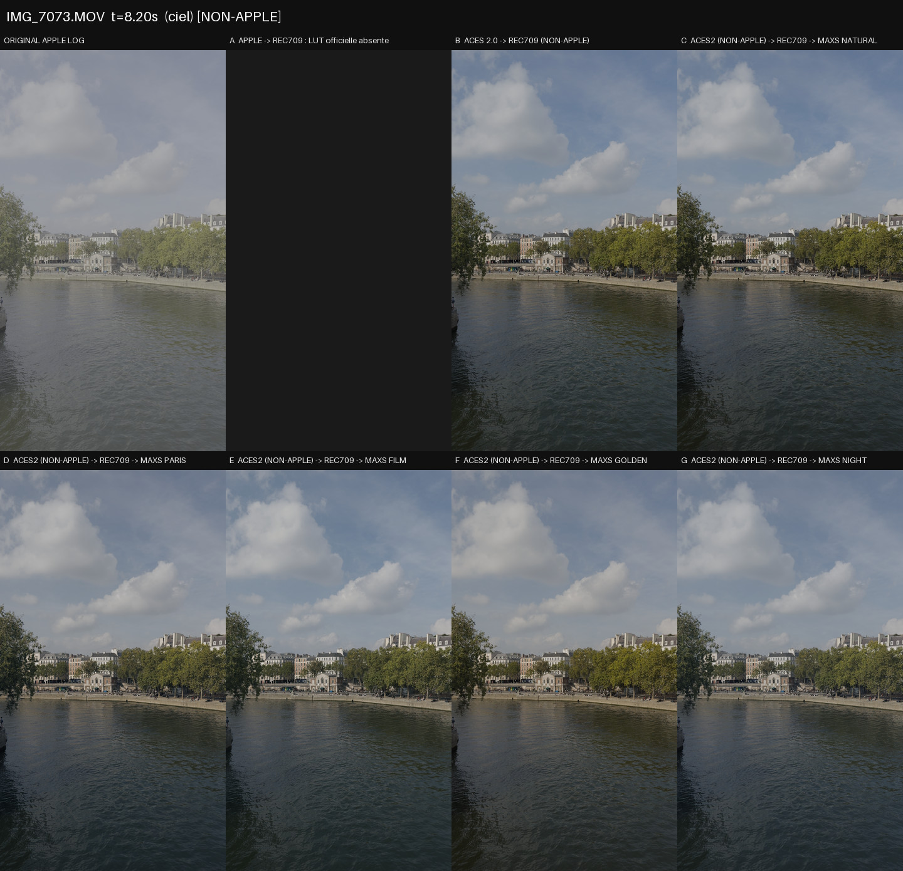
| rendu | L_median | contraste_L_p95_p5 | chroma_moyen | noir_p1_L | clip_hautes_pct | noirs_ecrases_pct | bruit_ombres_L_ratio | bruit_ombres_chroma_ratio | peau_chroma_ratio | peau_teinte_decalage_moyen | ciel_chroma_ratio | vegetation_chroma_ratio | blancs_chroma_moyen |
|---|---|---|---|---|---|---|---|---|---|---|---|---|---|
| B_ACES2 | 0.449 | 0.461 | 0.021 | 0.163 | 0.000 | 0.000 | 1.000 | 1.000 | – | – | 1.000 | 1.000 | – |
| MAXS_Natural | 0.441 | 0.489 | 0.021 | 0.147 | 0.000 | 0.000 | 1.019 | 1.070 | – | – | 1.014 | 0.965 | – |
| MAXS_Paris | 0.437 | 0.502 | 0.017 | 0.143 | 0.000 | 0.000 | 1.010 | 1.281 | – | – | 0.655 | 0.804 | – |
| MAXS_Film | 0.435 | 0.504 | 0.019 | 0.159 | 0.000 | 0.000 | 0.937 | 0.880 | – | – | 0.872 | 0.822 | – |
| MAXS_Golden | 0.441 | 0.487 | 0.017 | 0.149 | 0.000 | 0.000 | 1.011 | 1.192 | – | – | 0.658 | 1.045 | – |
| MAXS_Night | 0.445 | 0.476 | 0.019 | 0.162 | 0.000 | 0.000 | 0.980 | 1.144 | – | – | 0.859 | 0.778 | – |
Couverture détectée (%) : {"ciel": 34.2, "vegetation": 2.5, "blancs": 0.0, "peau": 0.0, "sombres": 15.1, "architecture": 40.9}
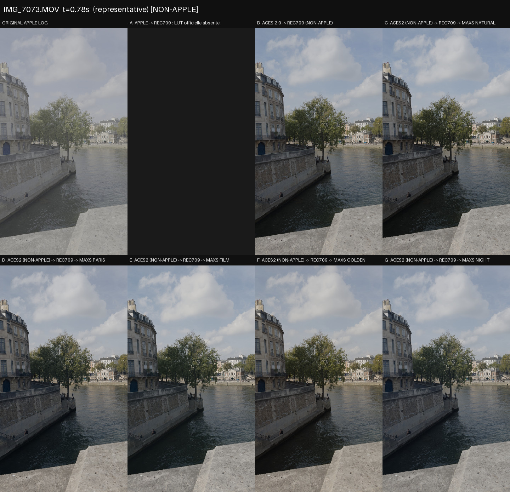
| rendu | L_median | contraste_L_p95_p5 | chroma_moyen | noir_p1_L | clip_hautes_pct | noirs_ecrases_pct | bruit_ombres_L_ratio | bruit_ombres_chroma_ratio | peau_chroma_ratio | peau_teinte_decalage_moyen | ciel_chroma_ratio | vegetation_chroma_ratio | blancs_chroma_moyen |
|---|---|---|---|---|---|---|---|---|---|---|---|---|---|
| B_ACES2 | 0.554 | 0.606 | 0.015 | 0.105 | 0.000 | 0.000 | 1.000 | 1.000 | – | – | 1.000 | 1.000 | – |
| MAXS_Natural | 0.554 | 0.635 | 0.015 | 0.092 | 0.000 | 0.000 | 1.010 | 0.988 | – | – | 1.003 | 0.975 | – |
| MAXS_Paris | 0.554 | 0.647 | 0.014 | 0.093 | 0.000 | 0.000 | 0.994 | 1.084 | – | – | 0.687 | 0.830 | – |
| MAXS_Film | 0.555 | 0.640 | 0.013 | 0.119 | 0.000 | 0.000 | 0.910 | 0.777 | – | – | 0.763 | 0.834 | – |
| MAXS_Golden | 0.554 | 0.633 | 0.013 | 0.096 | 0.000 | 0.000 | 1.002 | 1.060 | – | – | 0.619 | 1.077 | – |
| MAXS_Night | 0.555 | 0.619 | 0.014 | 0.109 | 0.000 | 0.000 | 0.971 | 0.988 | – | – | 0.860 | 0.800 | – |
Couverture détectée (%) : {"ciel": 39.1, "vegetation": 3.7, "blancs": 0.0, "peau": 0.1, "sombres": 21.7, "architecture": 34.0}
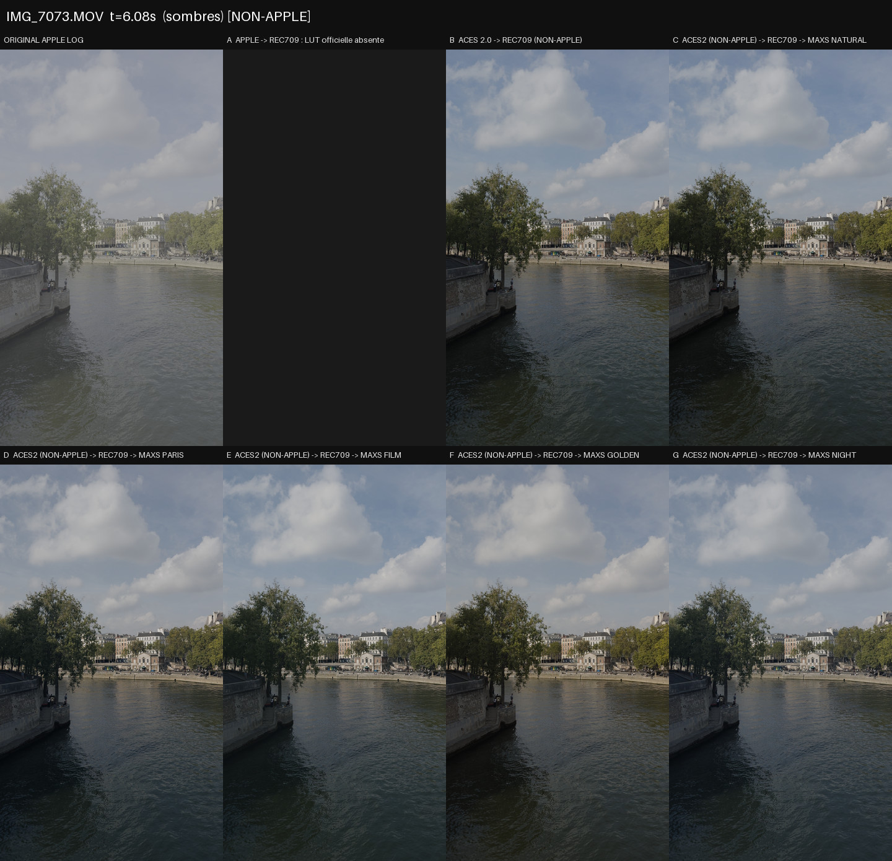
| rendu | L_median | contraste_L_p95_p5 | chroma_moyen | noir_p1_L | clip_hautes_pct | noirs_ecrases_pct | bruit_ombres_L_ratio | bruit_ombres_chroma_ratio | peau_chroma_ratio | peau_teinte_decalage_moyen | ciel_chroma_ratio | vegetation_chroma_ratio | blancs_chroma_moyen |
|---|---|---|---|---|---|---|---|---|---|---|---|---|---|
| B_ACES2 | 0.411 | 0.561 | 0.018 | 0.105 | 0.000 | 0.000 | 1.000 | 1.000 | – | – | 1.000 | 1.000 | – |
| MAXS_Natural | 0.400 | 0.586 | 0.017 | 0.093 | 0.000 | 0.000 | 1.007 | 1.009 | – | – | 1.012 | 0.966 | – |
| MAXS_Paris | 0.395 | 0.596 | 0.015 | 0.094 | 0.000 | 0.000 | 0.990 | 1.068 | – | – | 0.646 | 0.800 | – |
| MAXS_Film | 0.393 | 0.586 | 0.016 | 0.120 | 0.000 | 0.000 | 0.904 | 0.793 | – | – | 0.854 | 0.820 | – |
| MAXS_Golden | 0.401 | 0.584 | 0.014 | 0.096 | 0.000 | 0.000 | 0.999 | 1.085 | – | – | 0.632 | 1.051 | – |
| MAXS_Night | 0.405 | 0.570 | 0.017 | 0.110 | 0.000 | 0.000 | 0.969 | 0.975 | – | – | 0.865 | 0.774 | – |
Couverture détectée (%) : {"ciel": 35.9, "vegetation": 6.8, "blancs": 0.0, "peau": 0.1, "sombres": 6.5, "architecture": 45.4}
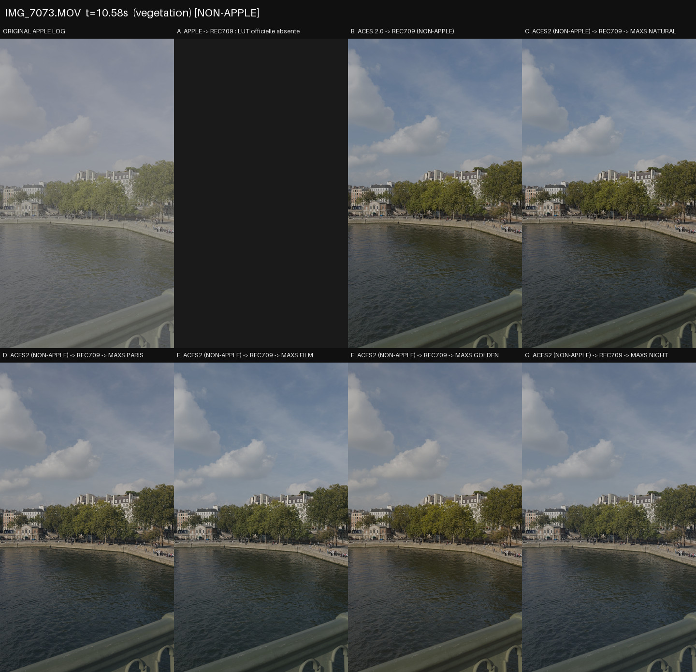
| rendu | L_median | contraste_L_p95_p5 | chroma_moyen | noir_p1_L | clip_hautes_pct | noirs_ecrases_pct | bruit_ombres_L_ratio | bruit_ombres_chroma_ratio | peau_chroma_ratio | peau_teinte_decalage_moyen | ciel_chroma_ratio | vegetation_chroma_ratio | blancs_chroma_moyen |
|---|---|---|---|---|---|---|---|---|---|---|---|---|---|
| B_ACES2 | 0.476 | 0.409 | 0.025 | 0.210 | 0.000 | 0.000 | 1.000 | 1.000 | – | – | 1.000 | 1.000 | – |
| MAXS_Natural | 0.470 | 0.434 | 0.025 | 0.191 | 0.000 | 0.000 | 1.025 | 1.095 | – | – | 1.015 | 0.962 | – |
| MAXS_Paris | 0.467 | 0.445 | 0.019 | 0.185 | 0.000 | 0.000 | 1.020 | 1.367 | – | – | 0.663 | 0.796 | – |
| MAXS_Film | 0.466 | 0.446 | 0.022 | 0.194 | 0.000 | 0.000 | 0.953 | 0.928 | – | – | 0.883 | 0.817 | – |
| MAXS_Golden | 0.471 | 0.432 | 0.021 | 0.193 | 0.000 | 0.000 | 1.017 | 1.229 | – | – | 0.672 | 1.041 | – |
| MAXS_Night | 0.473 | 0.421 | 0.021 | 0.204 | 0.000 | 0.000 | 0.985 | 1.217 | – | – | 0.857 | 0.767 | – |